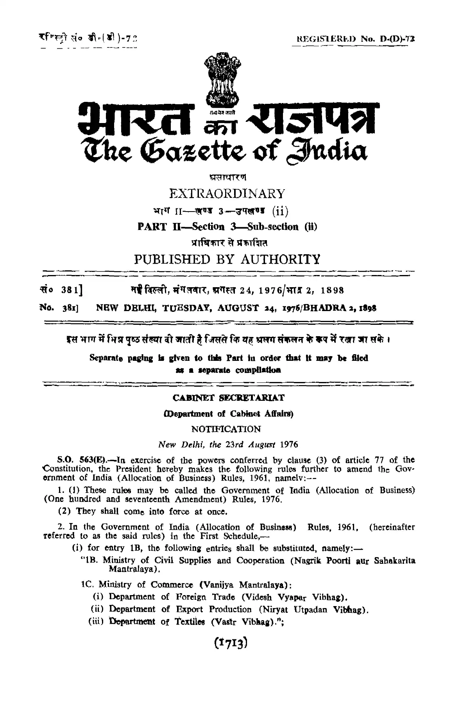
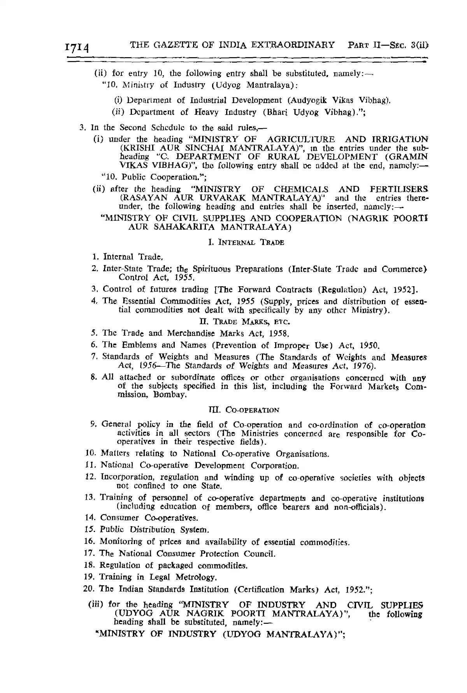
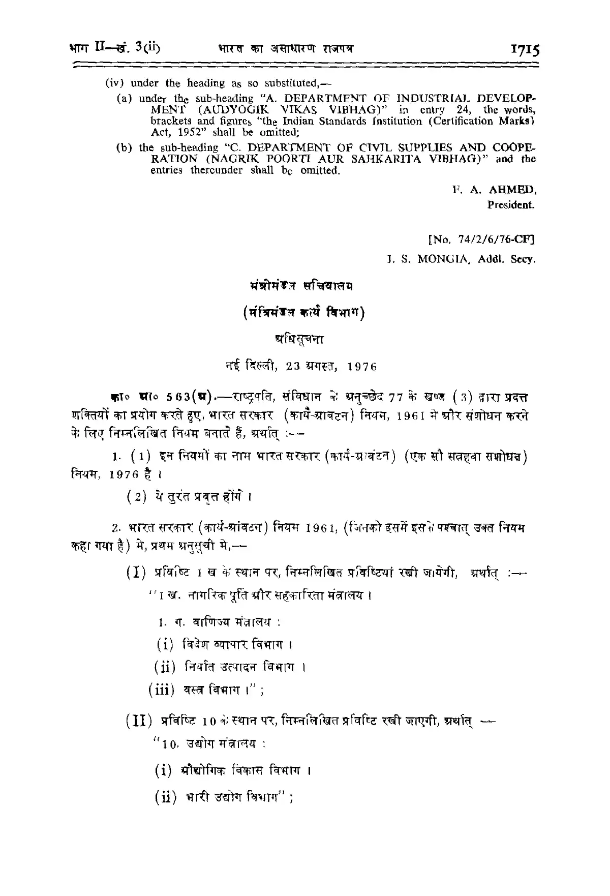
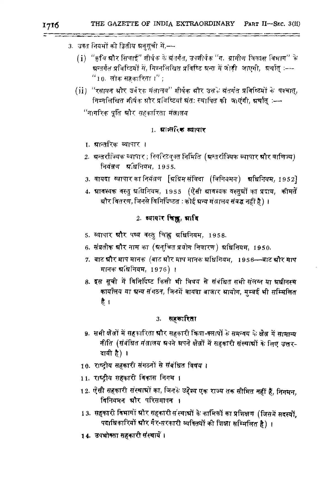
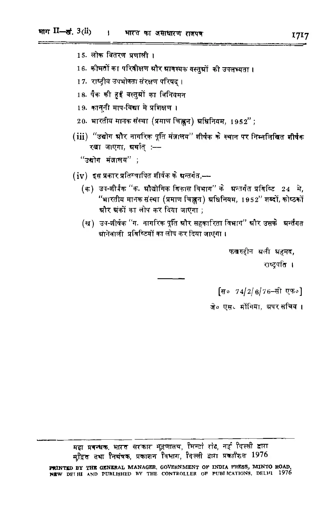

Amendment #117 (S.O. 563(E), 1976)
7 changes: 2 to the First Schedule, 5 to the Second Schedule. 5 applied2 not applied
What it did to the ministries
- spun offMinistry of Civil Supplies and Cooperation is separated from Ministry of Industry and Civil Supplies (9 subjects) change 1, 2, 4, 5, 6, 7 · histories: Industry, Civil Supplies and Cooperation
- renamedMinistry of Industry and Civil Supplies is renamed Ministry of Industry change 2, 5, 6, 7 · histories: Industry
The order, page by page
Page 1 of 6

1Schedule 1 › entry 1B
- 1B. Ministry of Civil Supplies and Cooperation
- 1C. Ministry of Commerce
- i. Department of Foreign Trade
- ii. Department of Export Production
- iii. Department of Textiles
applied at schedule 1 › ministry 1B in the Rules after #117
Page 2 of 6

2345Schedule 1 › entry 10
- 10. Ministry of Industry
- i. Department of Industrial Development
- ii. Department of Heavy Industry
applied at schedule 1 › ministry 10 in the Rules after #117
after Schedule 2 › MINISTRY OF AGRICULTURE AND IRRIGATION › DEPARTMENT OF RURAL DEVELOPMENT
- 10. Public Cooperation.
not applied (the change could not be placed in the Rules as read; see How this document was read)
after Schedule 2 › MINISTRY OF CHEMICALS AND FERTILISERS
- MINISTRY OF CIVIL SUPPLIES AND COOPERATION
- I. INTERNAL TRADE
- 1. Internal Trade.
- 2. Inter-State Trade; the Spirituous Preparations (Inter-State Trade and Commerce) Control Act, 1955.
- 3. Control of futures trading [The Forward Contracts (Regulation) Act, 1952].
- 4. The Essential Commodities Act, 1955 (Supply, prices and distribution of essential commodities not dealt with specifically by any other Ministry).
and 18 more
- II. TRADE MARKS, ETC.
- 5. The Trade and Merchandise Marks Act, 1958.
- 6. The Emblems and Names (Prevention of Improper Use) Act, 1950.
- 7. Standards of Weights and Measures (The Standards of Weights and Measures Act, 1956 The Standards of Weights and Measures Act, 1976).
- 8. All attached or subordinate offices or other organisations concerned with any of the subjects specified in this list, including the Forward Markets Commission, Bombay.
- III. CO-OPERATION
- 9. General policy in the field of Co-operation and co-ordination of co-operation activities in all sectors (The Ministries concerned are responsible for Cooperatives in their respective fields).
- 10. Matters relating to National Co-operative Organisations.
- 11. National Co-operative Development Corporation.
- 12. Incorporation, regulation and winding up of co-operative societies with objects not confined to one State.
- 13. Training of personnel of co-operative departments and co-operative institutions (including education of members, office bearers and non-officials).
- 14. Consumer Co-operatives.
- 15. Public Distribution System.
- 16. Monitoring of prices and availability of essential commodities.
- 17. The National Consumer Protection Council.
- 18. Regulation of packaged commodities.
- 19. Training in Legal Metrology.
- 20. The Indian Standards Institution (Certification Marks) Act, 1952.
applied at schedule 2 › ministry MINISTRY OF CIVIL SUPPLIES AND COOPERATION in the Rules after #117
Schedule 2 › MINISTRY OF INDUSTRY AND CIVIL SUPPLIES
- MINISTRY OF INDUSTRY
applied at schedule 2 › ministry MINISTRY OF INDUSTRY in the Rules after #117
Page 3 of 6

67Schedule 2 › MINISTRY OF INDUSTRY › DEPARTMENT OF INDUSTRIAL DEVELOPMENT › entry 24
applied at schedule 2 › ministry MINISTRY OF INDUSTRY › department A › group_heading V › entry 24 in the Rules after #117
Schedule 2 › MINISTRY OF INDUSTRY › DEPARTMENT OF CIVIL SUPPLIES AND COOPERATION
not applied (the change could not be placed in the Rules as read; see How this document was read)
Page 4 of 6

Page 5 of 6

Page 6 of 6
How this document was read
Known issues
| Change | Issue | Known as |
|---|---|---|
| 3 | change 3: no department DEPARTMENT OF RURAL DEVELOPMENT under schedule 2 › ministry MINISTRY OF AGRICULTURE AND IRRIGATION | Agriculture's departments |
| 7 | change 7: no department DEPARTMENT OF CIVIL SUPPLIES AND COOPERATION under schedule 2 › ministry MINISTRY OF INDUSTRY | A unit cited by a name the Second Schedule does not have |
From the Government of India (Allocation of Business) Rules, 1961 and their amendments, as published by the Cabinet Secretariat (cabsec.gov.in), read by orgpedia. The readings of the older scanned gazettes have known gaps.